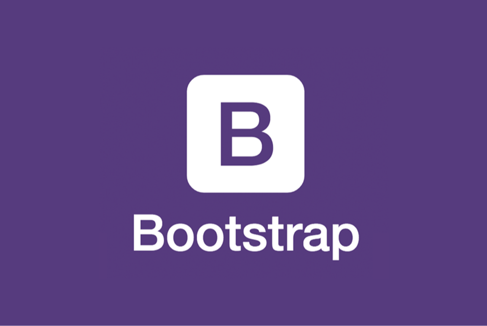

Bootstrap 5 - это популярная библиотека фронтенд-компонентов и стилей для разработки мобильно-адаптивных веб-сайтов. Она предоставляет готовые компоненты, такие как кнопки, формы, навигационные панели и другие, которые можно использовать для создания профессионально выглядящих интерфейсов.
Bootstrap 5 также обеспечивает сеточную систему, которая помогает разработчикам создавать отзывчивые макеты, которые автоматически адаптируются к различным размерам экранов и устройствам.
Она также имеет множество настраиваемых стилей и классов, которые позволяют разработчикам легко настроить внешний вид своего веб-сайта.
Bootstrap 5 является одной из самых популярных библиотек для разработки веб-сайтов, благодаря своей простоте использования и отличной поддержке сообщества разработчиков.
 Вернуться на главную страницу